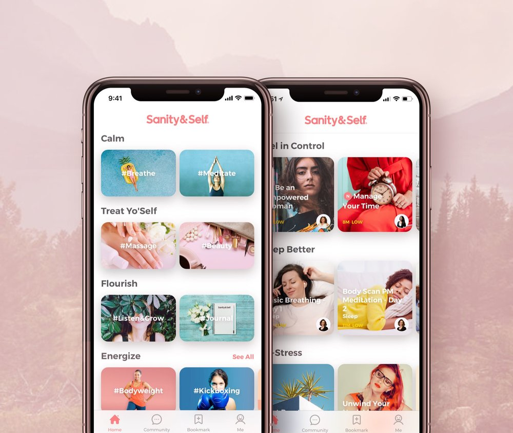
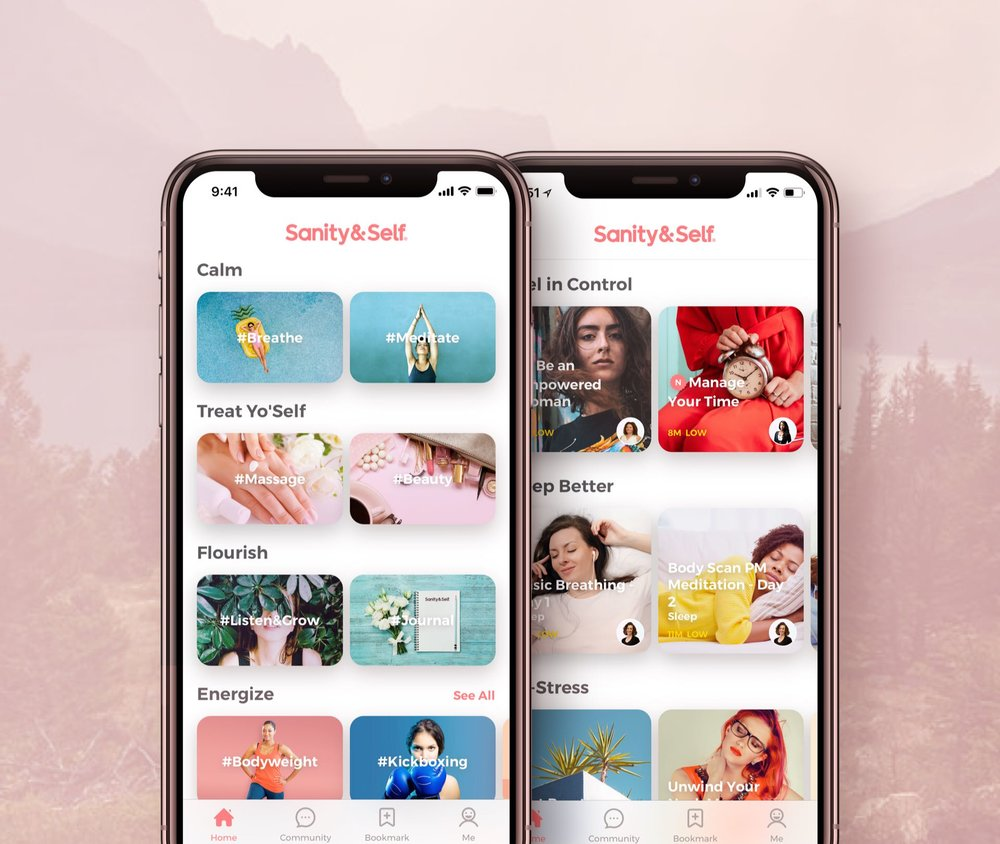

Self & Sanity App
Empowering women through connection
Overall, Self & Sanity is a really great tool to help promote mental health awareness in women coming from all different backgrounds and stages of life. It does have an online website, but it's content can exclusively be accessed via their mobile application. The app itself is a large collection of resources (videos, journaling tools, podcasts, and other 'self-care' promotional items. This means that the app itself has a lot of information that it needs to categorize and store for users to access. This is where the main interaction comes from on the app, as the user needs to click through all the content on their page in order to navigate to the particular topic they would like to learn more about or engage with. The app also has a separate interactive feature in their journal section in which the user can store their thoughts and ideas within the app and even attach photos/emotions with each entry.
While the interactive elements in the app are very useful for the audience, they may not be presented in the most clear or effective ways in order to actually meet their target purpose. The app can often seem chaotic or overwhelming for new users who don’t know where to start looking. They use a lot of really captivating and bright colors in their designs which is particularly well suited for their female audience seeking mental health aid. However, the color scheme can be a bit exotic at times and clash with the many images and text on the page. I think to have better interaction with the user, the app needs to be better organized. They have a lot of pathways and clickable options within the app, but sometimes it can take multiple clicks just to get to a topic you want and multiple more to get to a more specific piece of content.
The app has a lot of great purpose and interactive elements. In my opinion, however, it could use to be simplified. This would be especially helpful for an audience who might be struggling with anxiety and gets overwhelmed easily.
 

Style Novels Website
Online Furniture History and Catalog
The Style Novels site has immense interaction and engagement with the audience. Simply when opening up the site you are presented with birds flying in everywhere and three options to explore. Once you click on one of the options you are then transported to that own piece of history/journey. It is relatively clean and still feels simple because of the light color pallet they chose to use. They include a ton of imagery, but balance it out well with negative space and color blocking.
As one scrolls through the website they are greeted with new interactive elements across the page. The images begin to be revealed upon scroll, new facts appear around the images to inform the user and movement is heavily incorporated when revealing images. Some images even change perspective depending on where your mouse is hovering. This is a great example of incorporating interaction to static developments. They also have a section with tadpoles in which you can click and they will form into a heart shape and a red heart will appear in order to support the message that “love means creation” which seems vital to their page content. They clearly communicated passion, care, and love for their site. The page concludes with a form to download the catalog by simply giving your name, country, and email. I found it very interesting that they only revealed this capture form at the bottom of their pages because they are only looking for an audience who wants to fully engage with their content. It seems intentional and also very easy to use. The form is clear and easily navigated.
The site overall did an incredible job with the stylistic interaction choices. However, the main purpose of the site might not be fully realized to those unfamiliar with their content. They could possibly have a clearer about section or informational portion instead of diving straight into the content.